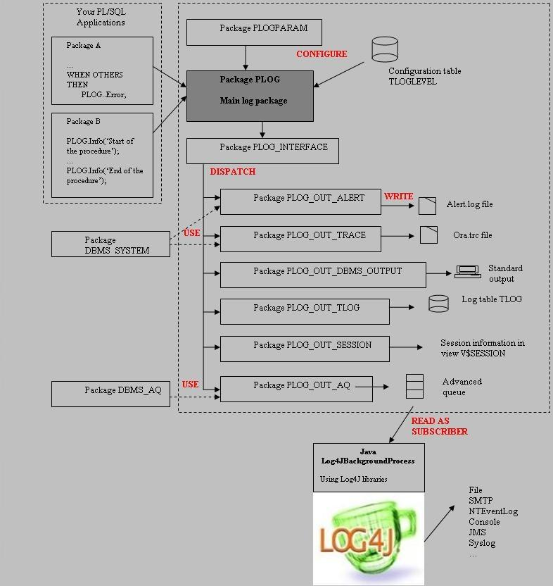
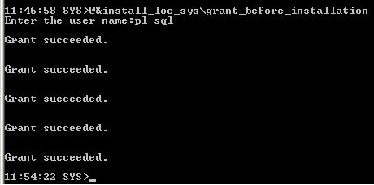
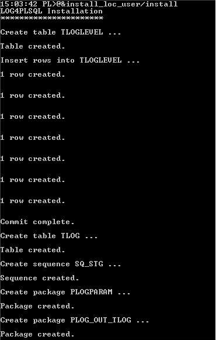
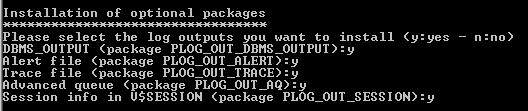

LOG4PLSQL: User Guide
Author: Guillaume Moulard
and Bertrand Caradec Tested with Oracle 10g |
LOG4PLSQL is a PL/SQL
framework for logging in all PL/SQL code
˙
Package,
˙
Procedure,
˙
Function,
˙
Trigger,
˙
PL/SQL Web application.
˙
Oracle Tools (form, report, …)
Purpose:
˙
Easy implementation and use
˙
Possibility to log apart from transaction
˙
Possibility to adapt the level of logging depending on user requirements
˙
Ability to use all LOG4J feature.
˙
Provide a complete set of PL/SQL
development tools (debug variable, SQLERRM, assert, call stack, ... ).
Log destination:
˙
table TLOG
˙
alert.log file
˙
trace file
˙
standard output
˙
session information (view V$SESSION)
˙
advanced queue read by Log4JBackgroundProcess. :
o Async,
o JDBC,
o JMS,
o NTEventLog,
o SMTP,
o Socket,
o SocketHub,
o Syslog,
o Telnet,
o Writer
Log4plsql was born from the log4J spirit (and use it).
See : Log4j documentation : http://logging.apache.org/log4j/docs/documentation.html
and the book written
by Ceki GÅlcÅ

Package PLOG
It is the main package of the log
functionality. Your PL/SQL applications call its public functions to create a
log event (info, debug …)
Package PLOGPARAM
Package containing default
values for the logging context
Package PLOG_INTERFACE
Dispatcher package built dynamically
during the installation of the schema (for compilation raison). Its role is to
call the dedicated packages for output according to the configuration and
installation choices.
Package PLOG_OUT_ALERT
Optional package writing log information
into the Oracle alert file alert.log. The function
DBMS_SYSTEM. Ksdwrt() function is used.
Package PLOG_OUT_TRACE
Optional package writing log
information into the Oracle trace file ora.trc. The
function DBMS_SYSTEM. Ksdwrt() function is used.
Package PLOG_OUT_AQ
Optional package writing log
information in a multi-consumer advanced queue
consumed by the Java background process. The messages are enqueued
using the package DBMS_AQ.
Package PLOG_OUT_DBMS_OUTPUT
Optional package writing log
information into the standard output. The package DBMS_OUTPUT is used.
Package PLOG_OUT_SESSION
Optional package writing log
information into the view V$SESSION. The package DBMS_APPLICATION_INFO is used.
Package PLOG_OUT_TLOG
Package writing the log
information in the table SL_TLOG. The package is part of the basis
installation.
- Download the zip file on the project
page: http://log4plsql.sourceforge.net
- Unzip the file Log4plsql.zip
The installation of the
LOG4PLSQL framework takes place in a dedicated user schema. The user must be already granted for:
- connecting to the database
- creating a table
- creating a procedure
- creating a type
- creating a sequence
Before the developer installs
the logging framework, the database administrator has to grant some Oracle packages
to the user.
The administrator can use the
script log4plsql\sql\install_sys\grant_before_installation.sql where following Oracle packages are
granted:
|
Oracle package |
Description |
|
DBMS_SYSTEM |
Needed to write log information in trace or alert files |
|
DBMS_AQADM |
Administration and configuration of the advanced queuing (creation of
queue table, queue, subscriber). Needed for the advanced queuing - LOG4J. |
|
DBMS_AQ |
Interface for Advanced Queuing (enqueue, dequeue …). Needed for the advanced queuing - LOG4J. |
|
DBMS_AQIN |
Used the LOG4J background process. Needed for the advanced queuing -
LOG4J. |
|
DBMS_AQJMS |
Used the LOG4J background process. Needed for the advanced queuing -
LOG4J. |
The administrator can comment
the grant commands if the Oracle packages are not needed.

The developer can install the LOG4PLSQL
framework in a dedicated user schema. To install it, the developer calls the
script log4plsql\sql\install_log_user\install.sql from sqlplus:

After the creation of the basis components (tables
TLOGLEVEL and TLOG, sequence SQ_STG, packages PLOGPARAM and PLOG_OUT_TLOG), the
user is asked which optional output packages he wants to install:

If the user answers by y
(Yes), the correspondent output package will be
installed.
Note for the advanced queue
output for LOG4J:
Oracle provides 2 types of
queues: single consumer queue or multi-consumer queue
(topic)
The installation installs a
single consumer queue named LOG_QUEUE.
If you prefer a multi-consumer queue (topic), you have to modify before the
installation the files output_aq.sql by removing the
comment of the files. In this case, the queue LOG_QUEUE_TOPIC is created and
the subscriber LOG4J for the Java background process.
|
|
Single consumer queue |
Multi consumer queue (topic) |
|
Queue table |
QTAB_LOG |
QTAB_LOG_TOPIC |
|
Name of the queue |
LOG_QUEUE |
LOG_QUEUE_TOPIC |
|
Subscriber name |
None |
LOG4J |
Once the output packages have
been selected and installed, the interface package SL_PLOG_INTERFACE is dynamically created (interface between
the main and output packages).
At the end of the
installation, please check in the log file install.txt that no error occurred.
If you don’t use LOG4J
features your installation is completed.
The next step is required if
you use a LOG4J feature.
Update the Java classpath in log4plsql\cmd\setVariable
Log4JBackgroundProcess is a Java process. It needs the
following Java libraries (JAR files) to run:
|
Library |
Description |
|
ORACLE XML PARSER (Java XDK components included
with Oracle Database 10.2) |
|
|
xmlparserv2.jar |
APIs for the following: ˙ DOM and SAX parsers ˙ XML Schema processor ˙ XSLT processor ˙ XML compression ˙ JAXP ˙
Utility functionality such as This library includes |
|
ORACLE JDBC Driver |
|
|
classes12.jar |
Classes for the
Thin and OCI driver |
|
orai18n.jar |
Contains classes for NLS
support in Oracle object and collection types |
|
ORACLE AQ API |
|
|
aqapi13.jar |
Oracle Advanced Queuing API |
|
JMS |
|
|
|
Sun library for JMS (Java
Message Service) |
|
JDK for SMTP Appender
used by LOG4J (optional) |
|
|
mail.jar |
JDK library |
|
activation.jar |
JDK library |
|
LOG4J (provided in log4plsql/lib) |
|
|
log4j-1.2.15.jar |
Library of the log4j project
(see http://logging.apache.org/index.html) |
|
LOG4PLSQL (provided in log4plsql/lib) – choose
one of the following |
|
|
Log4plsql-qr.jar |
Library of the background
process – Queue receiver |
|
Log4plsql-ql.jar |
Library of the background
process – Queue listener |
|
Log4plsql-tr.jar |
Library of the background
process – Topic receiver |
|
Log4plsql-tl.jar |
Library of the background
process – Topic listener |
You have to edit the file
log4plsql\cmd\setVariable.bat (windows) or log4plsql\cmd\setVariable.sh (linux) to set the classpath.
Properties file log4plsql\properties\log4plsql.xml
Edit the following connection parameters in the XML
file:
-
Username: database user
-
Password: database password
-
Dburl: JDBC URL of your database. The syntax is: jdbc:oracle:thin:@<host_name>:<port_number>:<sid>
- Queuename: LOG_QUEUE (default) or LOG_QUEUE_TOPIC (multi-consumer queue)
Start the log4jBackgroundProcess
Windows: log4plsql/cmd/startLog4JbackgroundProcess.bat
Linux:
log4plsql/cmd/startLog4JbackgroundProcess.sh
The framework provides several log functions depending
on the severity of the message:
|
PL/SQL Code |
Constant |
Value |
Description |
|
|
LOFF |
10 |
The OFF has the highest possible rank and is intended to turn off
logging. |
|
plog.fatal('Text'); |
LFATAL |
20 |
The FATAL level designates very severe error events that will
presumably lead the application to abort |
|
plog.error('Text'); |
LERROR |
30 |
The ERROR level designates error events that might still allow the
application to continue running. |
|
plog.warn('Text'); |
LWARN |
40 |
The WARN level designates potentially harmful situations |
|
plog.info('Text'); |
LINFO |
50 |
The INFO level designates informational messages that highlight the
progress of the application at coarse-grained level. |
|
plog.debug('Text'); |
LDEBUG |
60 |
The DEBUG Level designates fine-grained informational events that are
most useful to debug an application. |
|
|
LALL |
70 |
The ALL has the lowest possible rank and is intended to turn on all
logging. |
Table TLOG
By default Log4PLSQL logs in database table name TLOG:
|
|
SQL> desc ULOG.TLOG Nom
NULL ? Type -----------------------------------------
-------- ---------------------------- ID NOT
NULL NUMBER LDATE
DATE LLEVEL
NUMBER LSECTION
VARCHAR2(2000) LTEXT
VARCHAR2(2000) LUSER
VARCHAR2(30) LHSECS
NUMBER SQL> |
ID: ID of the log message, generated
by the sequence SQ_STG (function getNextID)
LDATE: date of the log
creation (set to SYSDATE in the log() function)
LLEVEL: log level as numeric
value
LSECTION: call stack formatted
by the package
LTEXT: user text. If the text
is empty, set to SQLCODE and SQLERRM
LUSER: database user calling
the log function
LHSECS: select HSECS into lLHSECS from V$TIMER
To read this table you can select the TLOG table or
the VLOG view.
Other destinations
It is also possible to log into alert.log,
trace file, standard output or in the view V$SESSION (see paragraph: Advanced
features for developer)
If you want to log in another destination, it is
necessary to use a Log4JbackgroundProcess feature. Currently, some log4j appenders exist for the console,
files,
GUI components, remote
socket servers, JMS,
NT
Event Loggers, and remote UNIX Syslog daemons. It is also possible to log asynchronously.
After installation it is possible to create in your
database a simple procedure:
|
|
Minimum use ... |
|
|
|
|
|
-- example 1 : direct call
exec TestProc select * from vlog LOG -------------------------------------------------------- [Aou 18,
00:52:44:25][INFO][SCOTT][block][mess info] [Aou 18, 01:07:26:41][INFO][SCOTT][block.SCOTT.TESTPROC][this select raise ORA-01403:No Data
Found] [Aou 18, 01:07:26:43][ERROR][SCOTT][block.SCOTT.TESTPROC][SQLCODE:100 SQLERRM:ORA-01403: No
Data Found] |
|
|
All logging
kinds. |
|
|
|
|
|
Begin PLOG.fatal ('mess fatal'); |
|
|
Minimum use ... |
|
|
|
|
|
BEGIN SQL> select ltexte from tlog; LTEXTE ------------------------------------------- AAS-20000: 1>1 always false |
Refer to Log4plsql\sql\testTools file for example.
The best practice to code it is to make a test before
logging with IsEnabled function:
˙
isDebugEnabled
˙
isInfoEnabled
˙
isWarnEnabled
˙
isErrorEnabled
˙
isFatalEnabled
|
|
BEGIN |
The logging is configured by a context variable
(record of type PLOGPARAM.LOG_CTX). This variable allows the developer to
define where the log information is sent to (table and/or alert file and/or
trace file and/or advanced queue for LOG4J and/or standard output and/or
V$SESSION), the transaction state of the log function (autonomous or not), the
log section …
In standard use of log4plsqsql it is not necessary to
use a specific context but in some cases the developer can specify a different
log context using the init() function.
Parameters of the init()
function:
|
|
Name |
Description |
Default |
|
|
|
pSECTION |
root of the tree section |
NULL |
Log4plsql computes a call stack |
|
|
pLEVEL |
All log functions with a level < pLEVEL are ignored |
DEBUG |
PLOGPARAM.DEFAULT_LEVEL (*) |
|
|
pLOG4J |
if true the log is sent to log4j via advanced queuing
(background process is required) |
FALSE |
PLOGPARAM.DEFAULT_USE_LOG4J (*) |
|
|
pLOGTABLE |
if true the log is inserted into the table tlog |
TRUE |
PLOGPARAM.DEFAULT_LOG_TABLE (*) |
|
|
pOUT_TRANS |
if true the log in the table is done in an autonomous
transaction (independent of the application transaction) |
TRUE |
PLOGPARAM.DEFAULT_LOG_OUT_TRANS (*) |
|
|
pALERT |
if true the log is written in alert.log |
FALSE |
PLOGPARAM.DEFAULT_LOG_ALERT (*) |
|
|
pTRACE |
if true the log is written in trace file |
FALSE |
PLOGPARAM.DEFAULT_LOG_TRACE (*) |
|
|
pDBMS_OUTPUT |
if true the log is sent in standard output using
DBMS_OUTPUT.PUT_LINE |
FALSE |
PLOGPARAM.DEFAULT_DBMS_OUTPUT (*) |
|
|
pSESSION |
if true the log is written in the view V$SESSION |
FALSE |
PLOGPARAM.DEFAULT_SESSION (*) |
|
|
pDBMS_OUTPUT_WRAP |
length to wrap output to when using DBMS_OUTPUT |
100 |
PLOGPARAM.DEFAULT_DBMS_OUTPUT_LINE_WRAP (*) |
|
|
(*) You can update the default values directly in package specification plogparam |
|||
Instead of initializing a specific log context, you
can change also the default parameters for your application.
Note: it is possible to have a plogparam
package from debug phase, and a others for production phase.
If the context is not initialized:
˙
section: dynamic pl/plsql
call stack
˙
log level: debug
˙
log in TLOG occurs in an autonomous transaction
When calling the init()
procedure, we advice to specify the parameter name for example:
pCTX PLOGPARAM.LOG_CTX := PLOG.init (pALERT => TRUE);
|
|
Declare |
|
|
In SQLPLUS |
|
|
SQL> exec PLOG.PURGE; ProcÈdure PL/SQL terminÈe avec succËs. SQL> SET SERVEROUTPUT ON SIZE 1000000 SQL> SQL> Declare 2 pCTX PLOGPARAM.LOG_CTX := PLOG.init
(pSECTION => 'firstSection', 3
pLEVEL =>
PLOG.LDEBUG, 4
pLOG4J =>
TRUE, 5
pLOGTABLE => TRUE, 6
pOUT_TRANS => TRUE, 7
pALERT =>
TRUE, 8
pTRACE =>
TRUE, 9
pDBMS_OUTPUT => TRUE ); 10 begin 11 PLOG.debug (pCTX, 'Hello LOG'); 12 end; 13 / 00:00:46:38-DEBUG-firstSection-Hello LOG ProcÈdure PL/SQL terminÈe
avec succËs. SQL> select * from vlog; LOG ----------------------------------------------------------------------------- [Aou 20, 23:59:59:39][OFF][SCOTT][plog.purge][Purge By SCOTT] [Aou 21, 00:00:46:38][DEBUG][SCOTT][firstSection][Hello LOG] SQL> |
|
|
You can view your log in all possible destination For example in my alert.log file |
|
|
Thu Aug 21 00:00:46 2003 PLOG:2003-08-21 00:00:46:38 user: SCOTT level: DEBUG logid: 44 firstSection Hello LOG |
By default a section is a PL/SQL call stack (limited
to 5 level).
|
|
PL/SQL call stack |
|
|
Create or replace function funcTSec return boolean is begin PLOG.error ('error in funcTSec'); return
true; end; / create or replace package ptSec is procedure ptSecPrc; end; / create or replace package body ptSec is procedure ptSecPrc is r boolean; begin PLOG.error ('error in ptSec'); r
:= funcTSec; end; end; / Exec PLOG.purge; Exec ptSec.ptSecPrc; / select
LSECTION||'->'||LTEXTE
from tlog; SQL> select
LSECTION||'->'||LTEXTE
from tlog; LSECTION||'->'||LTEXTE -------------------------------------------------------------------------------- plog.purge->Purge By SCOTT block.SCOTT.PTSEC->error in ptSec block.SCOTT.PTSEC.SCOTT.FUNCTSEC->error in funcTSec |
But it is possible to specify your own hierarchical
section:
˙
SetBeginSection: for creating a new node in
hierarchy.
˙
SetEndSection: for closing a node in hierarchy.
˙
GetSection: Return a section string.
|
|
Declare |
|
|
SQL> select * from vlog; -------------------------------------------------------------------------------- [30/07 16:48:34: 60][OFF ][SCOTT][plog.purge][Purge By SCOTT] [30/07 16:48:37: 93][ERROR
][SCOTT][hierarchical][section:hierarchical] [30/07 16:48:37: 94][ERROR
][SCOTT][hierarchical][mess 1] [30/07 16:48:37: 94][ERROR
][SCOTT][hierarchical.Test][mess 2] [30/07 16:48:37: 94][ERROR
][SCOTT][hierarchical.Test.Test1][mess 3] [30/07 16:48:37: 94][ERROR
][SCOTT][hierarchical.Test.Test2][mess 4] 6 ligne(s) sÇlectionnÇe(s). |
It is possible to dynamically update the log level. A
call to setLevel() without parameter sets it back to
the original package level (default value)
˙
getLevel: return the current log level.
˙
setLevel: change the current level, useful
for debugging a code part
|
|
Declare |
|
|
SQL> select * from vlog; |
Logging in the same transaction of the application
eventually induces some problems:
-
If you rollback a transaction your log message is rollback in same time
-
If your code is a very long operation, it isn’t possible to view its
progression.
To avoid this, LOG4PLSQL uses autonomous transactions
so that the log transaction is independent of the application transaction.
˙
GetTransactionMode: return TRUE if the log transaction
is autonomous, FALSE if not.
˙
SetTransactionMode: For setting transactional mode
(TRUE: autonomous transaction, FALSE: Log in application transaction).
To test it, 2 sessions are necessary
|
|
--In session A (in my test connected as SYSTEM) |
|
|
--In session B (in my test connect SCOTT) |
|
|
--In session A |
|
|
-- In session B |
If you want to
write your log messages in alert.log or/and trace
file, you can use 2 ways:
1. Set the parameters DEFAULT_LOG_ALERT
and/or DEFAULT_LOG_TRACE in plogparam to TRUE.
2. Use a specific context
See:Use no-default initialization
parameters
For the context way
you can use the init procedure or in the code, some
specific procedure:
˙
setLOG_ALERTMode (LOG_CTX, inLOG_ALERT):
when the parameter inLOG_ALERT is true or null, the
log for this context is write in alert.log file.
˙
getLOG_ALERTMode (LOG_CTX), retrun
true or false for the specific context.
˙
setLOG_TRACEMode (LOG_CTX, inLOG_TRACE):
when the parameter inLOG_TRACE is true or null, the
log for this context is write in trace file.
˙
getLOG_TRACEMode (LOG_CTX), retrun
true or false for the specific context.
|
|
Declare pCTX
PLOGPARAM.LOG_CTX := PLOG.INIT(pALERT=>TRUE,
pTRACE=>TRUE); begin plog.error(pCTX, 'Send to all
file'); end; / declare pCTX
PLOGPARAM.LOG_CTX := PLOG.INIT(); begin plog.setBeginSection(pCTX, 'TraceTest'); if ( plog.getLOG_TRACEMode(pCTX) )
then
plog.debug(pCTX, 'pCTX is true '); else plog.debug(pCTX, 'pCTX is false'); plog.setLOG_TRACEMode(pCTX); plog.debug(pCTX, 'pCTX is true after setLOG_TRACEMode'
);
end if; plog.info(pCTX,'find this
message in TRACE File'); plog.setEndSection(pCTX, 'TraceTest'); plog.setLOG_TRACEMode(pCTX,
FALSE); plog.setBeginSection(pCTX, 'AlertTest'); if ( plog.getLOG_ALERTMode(pCTX) )
then
plog.debug(pCTX, 'pCTX is true '); else plog.debug(pCTX,'pCTX is
false');
plog.setLOG_ALERTMode(pCTX); plog.debug(pCTX,'pCTX is true
after setLOG_TRACEMode' ); end if; plog.info(pCTX, 'find this
message in ALERT File'); end; |
|
|
LOG -------------------------------------------------------------------------------- [Aou 15, 15:36:16:24][OFF][SCOTT][plog.purge][Purge By SCOTT] [Aou 15,
15:36:16:62][ERROR][SCOTT][block][Send to all file] [Aou 15, 15:36:17:64][DEBUG][SCOTT][block.TraceTest][pCTX is false] [Aou 15, 15:36:17:65][DEBUG][SCOTT][block.TraceTest][pCTX is true
after setLOG_TRACEMode] [Aou 15, 15:36:18:74][INFO][SCOTT][block.TraceTest][find this message in TRACE File] [Aou 15, 15:36:18:81][DEBUG][SCOTT][block.AlertTest][pCTX is false] [Aou 15, 15:36:18:82][DEBUG][SCOTT][block.AlertTest][pCTX is true
after setLOG_T [Aou 15, 15:36:18:89][INFO][SCOTT][block.AlertTest][find this message in ALERT File] |
|
|
in trace directory gmdb_ora_1272.trc |
|
|
PLOG:2003-08-15 15:32:35:60 user: SCOTT level: ERROR logid: 18557 block Send to all file *** 2003-08-15 15:32:46.000 PLOG:2003-08-15 15:32:46:34 user: SCOTT level: DEBUG logid: 18559 .TraceTest pCTX is true after setLOG_TRACEMode PLOG:2003-08-15 15:32:46:43 user: SCOTT level: INFO logid: 18560 .TraceTest find this message in TRACE File |
|
|
in
alert_gmdb.log file |
|
|
Fri Aug 15 15:32:35 2003 PLOG:2003-08-15 15:32:35:60 user: SCOTT level: ERROR logid: 18557 block Send to all file PLOG:2003-08-15 15:32:46:50 user: SCOTT level: DEBUG logid: 18562 .AlertTest pCTX is true after setLOG_TRACEMode PLOG:2003-08-15 15:32:46:57 user: SCOTT level: INFO logid: 18563 .AlertTest find this message in ALERT File |
If you want to view
your log message in the standard output, you can use 2 ways:
1. Set the parameter
DEFAULT_DBMS_OUTPUT in plogparam to TRUE.
2. Use a specific context
See:Use no-default initialization
parameters
For the context way
you can use the init procedure or in the code, some
specific procedure:
˙
setDBMS_OUTPUTMode (LOG_CTX, inDBMS_OUTPUT):
when the parameter inDBMS_OUTPUT is true or null, the
log for this context is written to the standard output.
˙
getDBMS_OUTPUTMode (LOG_CTX), returns true or false
for the specific context.
|
|
SET SERVEROUTPUT ON SIZE 1000000 Create or replace procedure test is pCTX
PLOGPARAM.LOG_CTX := PLOG.INIT(pDBMS_OUTPUT
=>TRUE, PLEVEL => PLOG.LINFO ); begin plog.INFO(pCTX, 'My output
message'); end test; / exec test; |
|
|
SQL> exec test; 21:34:56:62-ERROR-block.SCOTT.TEST My output message |
If you want to view
your last log message in the view V$SESSION (columns module, client_info and action), you can use 2 ways:
1. Set the
parameter DEFAULT_SESSION in plogparam to TRUE.
2. Use a specific
context
See:Use no-default initialization parameters
For the context way
you can use the init procedure or in the code, some
specific procedure:
˙
setLOG_SessionMode (LOG_CTX, inLOG_SESSION):
when the parameter inLOG_SESSIONis true or null, the
log for this context is written in the view V$SESSION.
˙
getLOG_SessionMode (LOG_CTX), returns true or false
for the specific context.
|
|
SET SERVEROUTPUT ON SIZE 1000000 create or replace procedure test_session is v_log_ctx
PLOGPARAM.LOG_CTX; BEGIN v_log_ctx
:= plog.init(pSESSION
=> TRUE); plog.info(v_log_ctx, 'info test'); plog.info('info test'); END; / exec test_session; |
|
|
SQL> SYS>select module, client_info,
action from v$session where username = 'PL'; MODULE ------------------------------------------------ CLIENT_INFO ---------------------------------------------------------------- ACTION -------------------------------- block-->PL.TEST_SESSION User:PL info test INFO 05.06.2008 10:22:47 |
By using the Log4JbackgroundProcess:
1. You have all Log4j features
2. You can customize the output destination,
output format and output level by hierarchical log
Section
3. You have the possibility to log in a
database code but without I/O in database.
If you want to log your
message to the LOG4J background process, you can use 2 ways:
3. Set the parameter DEFAULT_LOG4J in plogparam to TRUE.
4. Use a specific context
See:Use
no-default initialization parameters
For the context way you can
use the init procedure or in the code, some specific
procedure:
˙
setUSE_LOG4JMode (LOG_CTX, inUSE_LOG4J): when the parameter inUSE_LOG4J
is true or null, the log for this context is sent via a specific advanced queue
to the log4jbackgroundProcess. This small java
application uses all log4j features.
˙
getUSE_LOG4JMode (LOG_CTX), return true or false for the specific
context.
Log4JbackgroundProcess starts
one thread by logSource. For each logSource,
is it possible to choose different database, user and queue.
JAR library of the background
process:
If you have a single consumer
queue (default installation), you can choose between 2 libraries:
- log4plsql-qr.jar: queue
receiver
- log4plsql-ql.jar: queue
listener
If you have a multi-consumer
queue, you can choose between 2 libraries:
- log4plsql-tr.jar: topic
receiver
- log4plsql-tl.jar: topic
listener
Example:
|
|
Linux command to start my
log4jbackgroundProcess |
|
|
ORACLE_HOME=/home/oracle/oracle/product/10.2.0/db_3 LOG4PLSQL_HOME=/home/oracle/log4plsql2_open CLASSPATH=$ORACLE_HOME/rdbms/jlib/aqapi13.jar # for Oracle on Linux, jta.jar
is needed for transactions CLASSPATH=$CLASSPATH:$ORACLE_HOME/jlib/jta.jar CLASSPATH=$CLASSPATH:$ORACLE_HOME/jdbc/lib/classes12.jar CLASSPATH=$CLASSPATH:$ORACLE_HOME/jlib/orai18n.jar CLASSPATH=$CLASSPATH:$ORACLE_HOME/lib/xmlparserv2.jar CLASSPATH=$CLASSPATH:$ORACLE_HOME/oc4j/j2ee/home/lib/jms.jar CLASSPATH=$CLASSPATH:$LOG4PLSQL_HOME/jlib/log4j-1.2.15.jar CLASSPATH=$CLASSPATH:$LOG4PLSQL_HOME/jlib/log4plsql-qr.jar export ORACLE_HOME CLASSPATH LOG4PLSQL_HOME cd $LOG4PLSQL_HOME echo start listener /usr/java/jdk1.5.0_14/bin/javalog4plsql.backgroundProcess.Run.
/properties/log4plsql.xml |
|
|
log4plsql.properties ( file name is the fist argument of my start
command) |
|
|
<?xml version="1.0"
encoding="UTF-8" ?> <!-- | This is the log4plsql
Pages configuration file | | guillaume
Moulard
6-may-2002 Creation | guillaume
Moulard
24-April-2002 adaptation for log4plsql2.2 | guillaume
Moulard
29-JAN-2003 adaptation for log4plsql3.1.1 |
- Multi dbms_pipe |
- Multi user/database by backgroundProcess | |
+--> <log4plsql>
<log4jParameterUseBybackgroundProcess>
<typeConfigurator confType="PropertyConfigurator"
/>
<fileName
name="./properties/log4j.properties" />
</log4jParameterUseBybackgroundProcess> <!-- | Log4plsql start one java thread by source +--> <logSource
name="logSource1">
<!-- log4j configuration part
| see :
http://jakarta.apache.org/log4j for general information
+-->
<log4j>
<!-- typeConfigurator reference to log4j Configurator type
| Currently possible
is : DOMConfigurator, PropertyConfigurator,
BasicConfigurator
+-->
<typeConfigurator confType="PropertyConfigurator"
/>
<fileName
name="./properties/log4j.properties" />
</log4j>
<database>
<source>
<connection> <!--
Database connection where log4plsql ase install.
| see : JDBC
Developer's Guide and Reference / Verifying a JDBC Client Installation
|
for all installation Oracle driver install
+-->
<username>pl_sql</username>
<password>pl_sql</password>
<!-- jdbc:oracle:thin:@<host_name>:<port_number>:<sid>
-->
<dburl>jdbc:oracle:thin:@192.168.10.251:1521:orcl</dburl>
</connection>
<!-- the default value of the queue is LOG_QUEUE +--> <queuename>LOG_QUEUE</queuename> </source> </database> </logSource> </log4plsql> |
|
|
log4j.properties (log4j/properties in log4plsql.properties) |
|
|
# An example log4j configuration file that outputs both to System.out # and a file named 'log4plsql.log'. # For the general syntax of property based configuration files see
the # documenation of
org.apache.log4j.PropertyConfigurator. # WARNING: Location information can be
useful but is very costly in # terms of computation. # The root logger uses the appender called
A1. # The root logger uses the appenders called
A1 and A2. Since no level # is specified, note the empty string between the comma
(",") and the # equals sign ("="), the level of the root logger remains # untouched. Log4j always initializes the level for the root logger
to # DEBUG. The root logger is the only logger that has a default # level. Bu default, all other loggers do not have an assigned level, # such that they inherit their level instead. # ConsoleAppender, File log4j.rootLogger=, A1, A2 # ConsoleAppender, File, NTLogServer # log4j.rootLogger=, A1, A2, NTLogServer,
mail ############################################################################### # performanceTest. # ############################################################################### log4j.appender.performanceTest=org.apache.log4j.ConsoleAppender log4j.appender.performanceTest.layout=org.apache.log4j.PatternLayout log4j.appender.performanceTest.layout.ConversionPattern=%n%d %.20m ############################################################################### # ConsoleAppender appender. # ############################################################################### # A1 is set to be ConsoleAppender
sending its output to System.out log4j.appender.A1=org.apache.log4j.ConsoleAppender # A1 uses PatternLayout. log4j.appender.A1.layout=org.apache.log4j.PatternLayout # The conversion pattern consists of date in ISO8601 format, level, # thread name, logger name truncated to its rightmost two components # and left justified to 17 characters, location information
consisting # of file name (padded to 13 characters) and line number, nested # diagnostic context, the and the application supplied message # see : http://jakarta.apache.org/log4j/docs/api/org/apache/log4j/PatternLayout.html log4j.appender.A1.layout.ConversionPattern=%d %-5p [%t] %-17c{2}
(%13F:%L) %3x - %m%n #log4j.appender.A1.layout.ConversionPattern=%n%d %-5p (%c) %m
[%3x][%t][%13F:%L] ############################################################################### # File appender. # ############################################################################### # Appender A2 writes to the file "./log/log4plsql.log". log4j.appender.A2=org.apache.log4j.FileAppender log4j.appender.A2.File=./log/log4plsql.log # Truncate 'log4plsql.log' if it aleady
exists. #log4j.appender.A2.Append=false log4j.appender.A2.Append=true # Appender A2 uses the PatternLayout. log4j.appender.A2.layout=org.apache.log4j.PatternLayout # standard information log4j.appender.A2.layout.ConversionPattern=%d %-5p (%c) - %m [%x]%n ############################################################################### # NT Event Loger appender. # is necessary to have NTEventLogAppender.dll in windows path !!! ############################################################################### log4j.appender.NTLogServer.Threshold=DEBUG log4j.appender.NTLogServer=org.apache.log4j.nt.NTEventLogAppender log4j.appender.NTLogServer.layout=org.apache.log4j.HTMLLayout log4j.appender.NTLogServer.layout=org.apache.log4j.PatternLayout log4j.appender.NTLogServer.layout.ConversionPattern=%d %5p [%c] %x -
%m%n ############################################################################### # Mail loger appender. # ############################################################################### #log4j.appender.mail=org.apache.log4j.net.SMTPAppender #log4j.appender.mail.layout=org.apache.log4j.PatternLayout #log4j.appender.mail.layout.ConversionPattern=%d %5p [%t] (%F:%L) - %m%n #log4j.appender.mail.To=your@email.com #log4j.appender.mail.SMTPHost=smtp.srv.provider.com #log4j.appender.mail.Subject=loogin message! Your application
database name #log4j.appender.mail.From=log4plsq@lists.sourceforge.net #log4j.appender.mail.BufferSize=1 log4j.appender.mail=org.apache.log4j.net.SMTPAppender log4j.appender.mail.layout=org.apache.log4j.PatternLayout log4j.appender.mail.layout.ConversionPattern=%d %5p [%t] (%F:%L) - %m%n log4j.appender.mail.To=guillaume.moulard@francetelecom.com log4j.appender.mail.SMTPHost=smtp2.smtpft.francetelecom.fr log4j.appender.mail.Subject=loogin message! Your application database
name log4j.appender.mail.From=gmoulard@log4plsql.org log4j.appender.mail.BufferSize=1 ############################################################################### # What you log.
# ############################################################################### # Log only a INFO message for backgroundProcess
statement # Dev log4j.logger.backgroundProcess=DEBUG # prod #log4j.logger.backgroundProcess=ERROR # Log all database message #log4j.logger.log4plsql=DEBUG log4j.logger.log4plsql=ALL #log4j.logger.log4plsql.ULOG.testLog4jFeatures.codePart1=INFO
############################################################################### # end of file ###############################################################################
|
|
|
Example data for test |
|
|
declare |
|
|
File
".\log\log4plsql.log |
|
|
2008-06-05
12:55:21,165 DEBUG (PL.testLog4jFeatures.codePart1) - mess :1
[DatabaseLoginDate:2008-06-05 12:55:12.0] 2008-06-05
12:55:21,317 INFO (PL.testLog4jFeatures.codePart1)
- mess :2 [DatabaseLoginDate:2008-06-05 12:55:12.0] 2008-06-05
12:55:21,608 DEBUG (PL.testLog4jFeatures.codePart2) - mess :3
[DatabaseLoginDate:2008-06-05 12:55:12.0] 2008-06-05
12:55:21,916 INFO
(PL.testLog4jFeatures.codePart2) - mess :4
[DatabaseLoginDate:2008-06-05 12:55:12.0] |
Use ASSERT call when you want to verify a condition.
It can be useful to control
the values of variables or parameters.
˙
assert: procedure log a messge if pCondition is FALSE. If pRaiseExceptionIfFALSE
= TRUE the message is raise
Parameter:
|
|
Name |
Default |
|
Description |
|
PCTX |
LOG_CTX |
Context |
|
|
pCONDITION |
BOOLEAN (Mandatory) |
Test condition |
|
|
pLogErrorMessageIfFALSE |
VARCHAR2 default 'assert condition error'. |
message if pCondition is true |
|
|
pLogErrorCodeIfFALSE |
NUMBER default -20000 |
error code is pCondition is true range
-20000 .. -20999 |
|
|
pRaiseExceptionIfFALSE |
BOOLEAN default FALSE |
if true raise pException_in if pCondition is true |
|
|
PLogErrorReplaceError |
BOOLEAN default FALSE |
TRUE, the error is placed on the stack of previous errors. If FALSE
(the default), the error replaces all previous errors (see Oracle Documentation
RAISE_APPLICATION_ERROR) |
|
Example 1: only log
|
|
Declare |
|
|
SQL> declare 2 begin 3 plog.assert (1=1 , 'Always true, This message is never in
log.'); 4 plog.assert (user = 'SYSTEM' , 'Please use this code with
system user'); 5
end; 6 / ProcÇdure PL/SQL terminÇe avec succäs. SQL> select user from dual; USER ------------------------------ SCOTT SQL> select * from vlog; LOG -------------------------------------------------------------------------------- [Aou
25, 22:39:34:75][ERROR][SCOTT][block][AAS-20000: Please use this code with system user] SQL> |
Example 2: Log message + Raise application Error
|
|
Declare
'Please use this code with system user', -20001, TRUE); |
|
|
SQL> Declare 2 begin 3 plog.assert (user = 'SYSTEM' , 4 5
'Please use this code with system user', -20001, TRUE); 6
end; 7 / Declare * ERREUR Ö la ligne 1 : ORA-20001: Please use this code with system user ORA-06512: Ö "ULOG.PLOG", ligne 941 ORA-06512: Ö "ULOG.PLOG", ligne 959 ORA-06512: Ö ligne 3 |
The framework gives you the
possibility to display the current call stack of the PL/SQL application.
Use the function full_call_stack() for this.
Example:
|
|
create or replace procedure pts010 is ms varchar2(2000); pCTX
PLOGPARAM.LOG_CTX := PLOG.INIT; begin PLOG.full_call_stack; end; / create or replace procedure pts009 is begin PLOG.ERROR ('009');
pts010 ; end; / create or replace procedure pts008 is begin PLOG.ERROR ('008');
pts009 ; end; / create or replace procedure pts007 is begin PLOG.ERROR ('007');
pts008 ; end; / create or replace procedure pts006 is begin PLOG.ERROR ('006');
pts007 ; end; / create or replace procedure pts005 is begin PLOG.ERROR ('005');
pts006 ; end; / create or replace procedure pts004 is begin PLOG.ERROR ('004');
pts005 ; end; / create or replace procedure pts003 is begin PLOG.ERROR ('003');
pts004 ; end; / create or replace procedure pts002 is begin PLOG.ERROR ('002');
pts003 ; end; / create or replace procedure pts001 is begin PLOG.ERROR ('001');
pts002 ; end; / |
|
|
SQL> Exec pts001; SQL> select ltext from tlog; 001 002 003 004 005 006 007 008 009 -----
PL/SQL Call Stack ----- object line object handle number name 0x2a24408c 1916 package body PL.PLOG 0x2a24408c 1892 package body PL.PLOG 0x2a0fd3e0
6 procedure PL.PTS010 0x2a1f8e1c
1 procedure PL.PTS009 0x2a3c2070
1 procedure PL.PTS008 0x30a9a8b4
1 procedure PL.PTS007 0x2be313c0
1 procedure PL.PTS006 0x308794f0
1 procedure PL.PTS005 |
It is possible to log the backtrace of an error using the function full_errror_backtrace().
This function displays the
error trace from the function where the error occurred (exception not handled
in the function) until the first function with the error is handled.
Example with procedures:
test_error_backtrace -> test_2 (no exception handler)
- > test_3 (no exception handler)
^
^
|
|
Plog.full_error_backtrace
Error NO_DATA_FOUND
The error NO_DATA_FOUND fired
in test_3() is propagated to the exception handler of the function test_error_backtrace() where the function plog.full_error_backtrace displays the error back trace.
|
|
create or replace procedure test_3 as val
NUMBER; begin SELECT 1 INTO val FROM DUAL WHERE 1 = 2; end; / create or replace procedure test_2 as begin test_3; end; / create or replace procedure test_error_backtrace
as begin test_2; exception WHEN OTHERS THEN plog.full_error_backtrace; end; / exec test_error_backtrace; |
|
|
SQL>select * from vlog; [Jun
06, 13:24:01:27][ALL][PL][block-->PL.TEST_ERROR_BACKTRACE][SQLCODE:100
SQLERRM:ORA-0140 3:
no data found Error
back trace: at
"PL.TEST_3", line 4 at
"PL.TEST_2", line 4 at
"PL.TEST_ERROR_BACKTRACE", line 3 ] |
Is it possible to custom your
log level. By default in TLOGLEVEL table there are 7 different levels (OFF,
FATAL, ERROR, WARN, INFO, DEBUG, ALL). If is necessary, is possible to add some
other level in the table. After is possible to use a generic log call :
Attention: if is possible to add a new level,
it is always necessary to have a standard log level.
˙ log([LOG_CTX, ]TLOG.LLEVEL%type|TLOGLEVEL.LCODE%type [, Mess])
|
|
insert into TLOGLEVEL (LLEVEL, LCODE, LDESC) Commit; exec plog.log ('AppError'
, 'my Application error'); |
|
|
Select * from vlog; SQL> select * from vlog; LOG -------------------------------------------------------------------------------- [Dec 22, 18:44:55:38][AppError][ULOG][block][my Application error] |
|
|
Exec PLOG.purge; |
|
|
Declare |
Is it possible to delete an old logging message whit a date in parameter :
PLOG.purge (pCTX, sysdate – 7 ); -- deletes all logs older than a week
This test use Oracle 9.2.0.1.0 and log4plsql V2.0.3 in
windows 2000
|
|
Test 1: Workload when a data is not store in a table. Why this test: In development and debug phase, it is necessary to add
some debugging message. But in production phase, these messages have a cost. Result: Workload for not stored messages : 304 seconds required for
1,000,000 calls |
|
|
1 Create or replace procedure
testWorkload1 ProcÇdure PL/SQL terminÇe avec succäs.
1 begin 2 testWorkload1; 3* end; LOG -------------------------------------------------------------------------------------------------------------------------------------------------------------------------------------------------------- [11/07 12:28:26: 38][OFF ][TESTLOG][plog.purge][Purge By TESTLOG] [11/07 12:28:26: 85][INFO
][TESTLOG][perfTestWithoutlog][Begin] [11/07 12:33:30: 74][INFO
][TESTLOG][perfTestWithoutlog][End] DÇconnectÇ de Oracle9i Enterprise Edition Release 9.2.0.1.0 - Production With the OLAP and Oracle Data Mining options JServer Release 9.2.0.1.0 - Production |
|
|
Test 2: Workload when a data is store in a table by a same
transaction. Why this test: It is a classic development test. Result: Workload for transaction messages : 1,358 seconds required for
1,000,000 calls Nb: Commits all 10,000 calls |
|
|
1 Create or replace procedure
testWorkload2 2 is 3 lCtx PLOG.LOG_CTX := PLOG.init ('perfTestWithlog',
PLOG.LINFO); 4 begin 5 plog.info(lCtx, 'Begin'); 6 for i in 1..100 loop 7 for i in 1..10000 loop 8 plog.WARN (lCtx, 'InsertInTable'); 9 end loop 10 commit; 11 end loop; 12 plog.info(lCtx, 'End'); 13 commit; 14* end; ProcÇdure PL/SQL terminÇe avec succäs.
1 begin 2 testWorkload2; 3* end; nbr line insert by log ---------------------- 1000000 TO_CHAR(LDATE,'HH24:MI:SS')||LTEXTE -------------------------------------------------------------------------------------------------------------------------------------------------------------------------------------------------------- 12:51:30 Begin 13:14:08 End |
|
|
Test 3: Workload when a data is stored in a table off transaction
and backgroundProcess using. Why this test: It is a classic production test. Result: Workload for off transaction messages : 6,728 seconds
required for 1,000,000 calls 0.006,728 seconds / Call. Nb: no commit it is required. |
|
|
2002-07-12 15:22:43,014 INFO
(backgroundProcess) - Start 2002-07-12 15:22:43,024 DEBUG (CallerBDbgProcessThread)
- CallerBDbgProcessThread : Connect 2002-07-12 15:22:43,134 DEBUG (CallerBDbgProcess)
- dbURI:jdbc:oracle:thin:@localhost:1521:gmdb dbUser:ulog
dbPass:ulog 2002-07-12 15:22:52,658 DEBUG (CallerBDbgProcessThread)
- begin loop 2002-07-12 15:22:53,930 INFO
(log4plsql.ULOG.background_Log) - background_Log
Start - [Database Date:12/07 15:22:52: 96] 2002-07-12 15:24:26,283 INFO
(log4plsql.TESTLOG.perfTestWithlog) - Begin - [Database Date:12/07
15:24:25: 18] 2002-07-12 15:24:26,293 WARN
(log4plsql.TESTLOG.perfTestWithlog) - InsertInTable
- [Database Date:12/07 15:24:25: 27] ... ... ... 2002-07-12 17:16:34,520 WARN
(log4plsql.TESTLOG.perfTestWithlog) - InsertInTable
- [Database Date:12/07 17:16:33: 10] 2002-07-12 17:16:34,530 INFO
(log4plsql.TESTLOG.perfTestWithlog) - End - [Database Date:12/07
17:16:33: 10] |
The log4plsql logo was designed and kindly donated by Didier Eloy.
|
|
/* * ============================================================================ *
The LOG4PLSQL Software License, Version 1.0 *
============================================================================ * * Copyright (C) 2002 The LOG4PLSQL
project team. All rights reserved. * * Redistribution and use
in source and binary forms, with or without modifica- * tion,
are permitted provided that the following conditions are met: * * 1. Redistributions
of source code must retain the above copyright notice, * this list of conditions
and the following disclaimer. * * 2. Redistributions
in all form must reproduce the above copyright notice, * this list of conditions
and the following disclaimer in the documentation * and/or other materials
provided with the distribution. * * 3. The end-user
documentation included with the redistribution, if any, must * include the following acknowledgment: * "This product
includes software developed by the LOG4PLSQL project team * see
<http://log4plsql.sourceforge.net>." * Alternately, this acknowledgment may appear in the software itself, if * and wherever such
third-party acknowledgments normally appear. * * 4. The names
"log4j" and
"Apache Software Foundation" must not be
used to * endorse or promote products derived from this software without prior * written permission. For
written permission, please contact * apache@apache.org. * 4b.The names
"log4plsql" and
"LOG4PLSQL project team" must not be
used to * endorse or promote products derived from this software without prior * written permission. For
written permission, please contact * * * 6. Products derived from this software may
not be
called "log4plsql", nor may * "log4plsql"
appear in their name, without prior written permission of the * LOG4PLSQL project team. * * THIS SOFTWARE IS
PROVIDED ``AS IS'' AND ANY EXPRESSED OR IMPLIED WARRANTIES, * INCLUDING, BUT NOT
LIMITED TO, THE IMPLIED WARRANTIES OF MERCHANTABILITY AND * FITNESS FOR A PARTICULAR PURPOSE ARE DISCLAIMED. IN NO EVENT SHALL THE * APACHE SOFTWARE FOUNDATION OR ITS CONTRIBUTORS BE LIABLE FOR ANY DIRECT, * INDIRECT, INCIDENTAL,
SPECIAL, EXEMPLARY, OR
CONSEQUENTIAL DAMAGES (INCLU- * DING, BUT NOT LIMITED
TO, PROCUREMENT OF SUBSTITUTE
GOODS OR SERVICES; LOSS * OF USE, DATA, OR PROFITS; OR BUSINESS INTERRUPTION) HOWEVER CAUSED AND ON * ANY THEORY OF LIABILITY, WHETHER IN CONTRACT, STRICT LIABILITY, OR TORT * (INCLUDING NEGLIGENCE OR OTHERWISE) ARISING IN ANY WAY OUT OF THE USE OF * THIS SOFTWARE, EVEN IF
ADVISED OF THE POSSIBILITY OF SUCH DAMAGE. * * This software consists of voluntary contributions
made by many individuals * on behalf of the LOG4PLSQL project
team. For more information on the * LOG4PLSQL project team,
please see <http://log4plsql.sourceforge.net>. * */ |
|
|
V1. |
16-APR-2002 |
Creation |
|
|
V1.1 |
18-APR-2002 |
˙
Increase a date log precision for bench user hundredths of seconds of V$TIMER |
|
|
V2.0d |
24-APR-2002 |
˙
Increase a documentation quality (adding
examples, detail some PL/SQL feature) ˙
Use Log4J for extend features write and document
Log4JbackgroundProcess |
|
|
V2.0 |
31-JUL-2002 |
˙
Update a Log4J Use ˙
Create a default section is a PL/SQL call
stack. ˙
Performance testing ˙
Start a TOra integration ˙ Update a documentation |
|
|
V2.0.1 |
07-AUG-200 |
˙
Update englih
documentation with Chrisitine Moulard
Help |
|
|
V2.0.2 |
30-AUG-2002 |
˙
Update Logo by Didier Eloy |
|
|
V2.0.3 |
12-DEC-2002 |
˙
Update for bug correction |
|
|
V2.1 |
23-APR-2003 |
˙
Use jakarta-log4j-1.2.8 ˙
news features : ˙ Logging off transaction without
background process ˙ Logging off transaction and out
off database without I/O in database |
|
|
V2.1.1 |
7-JUN-03 |
˙
Add screenshot in documentation ˙
News features ˙ Add is[Debug|Info|Warn|Error|Fatal]Enabled
requested by Dan Catalin ˙ Open a capability to decrease a
level ˙ Create a fatal procedure for log |
|
|
V3.0.0b |
5-AUG-03 |
News features ˙ Log in alert.log,
trace file (thank to andreAs for information) ˙ Log with DBMS_OUTPUT (Wait ->
SET SERVEROUTPUT ON) ˙ Log full_call_stack ˙ getLOG4PLSQVersion return string
Version ˙ getLevelInText return the text level for one
level I read a very interesting article write by ˙
assert procedure ˙
default message for each log procedure is now
SQLCODE and SQLERRM Update ˙ Update default value of
PLOGPARAM.DEFAULT_LEVEL -> DEBUG ˙ Now is possible to log in table
and in log4j ˙ ctx and init
funtion parameter. ˙ Create of PLOGPARAM for updatable parameter |
|
|
V3.1.0B |
22-DES-03 |
News features ˙ Add custom log level |
|
|
V3.1.1 |
29-JAN-04 |
increase perf : propose by Detlef |
|
|
V3.1.2 |
02-FEV-04 |
News features ˙ Log4JbackgroundProcess create a thread for each database connexion |
|
|
V3.1.2.1 |
|
Bug correction |
|
|
V3.1.2.2 |
|
Bug correction |
|
|
V3.1.3 |
11-FEV-05 |
Add LJLEVEL |
|
|
V3.1.3.1 |
18-MAY-05 |
Update a Log4JbackgroundProcess for correct a bug |
|
|
V3.1.3.2 |
5-OCT-06 |
Oracle 10.2.0.1.0 adaptations. not fully tested. |
|
|
V4.0 |
04-JUN-08 |
- New framework architecture - New output: V$SESSION - Modular installation of output packages - Advanced queuing replaces the pipe - Log4JbackgroundProcess is JMS listener to the queue |
˙
Log message limited to 2.000 characters
˙
Only use in Oracle database!!! PL/SQL to J
End document